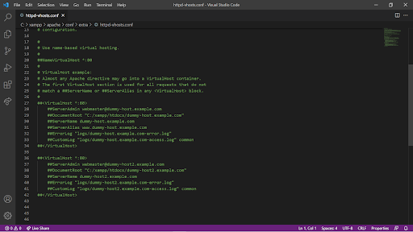
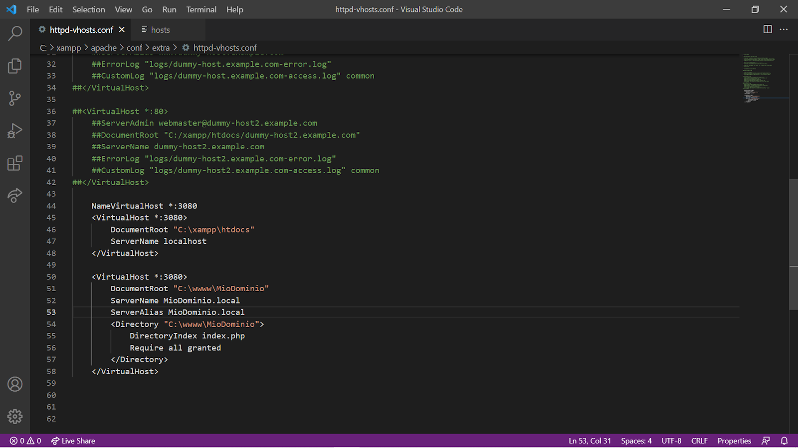

Per creare diversi domini su xampp è necessario seguire questo procedimento:
- Aprire il file C:\xampp\apache\conf\extra\httpd-vhosts.conf usando un editor di testo.
- 
- Aggiungere le seguenti righe:
- 
- Da riga 44 a 48 attivano i virtual Host e specificano che il percorso di default per localhost è la cartella C:\xampp\htdocs
- Da riga 50 a 58 si crea un nuovo virtual host il cui dominio sarà MioDominio.local è avrà C:\wwww\MioDominio come cartella di riferimento.
- Creare le corrispondenti cartelle sul disco che si sta utilizzando.
- Salvare e chiudere il file di configurazione.
- Aprire il file C:\Windows\System32\drivers\etc\hosts come amministratore e aggiungere la seguente riga:

Seguendo questo sistema si può rendere Xampp name-based e creare così un dominio per ogni sito web che abbiamo necessità di creare.